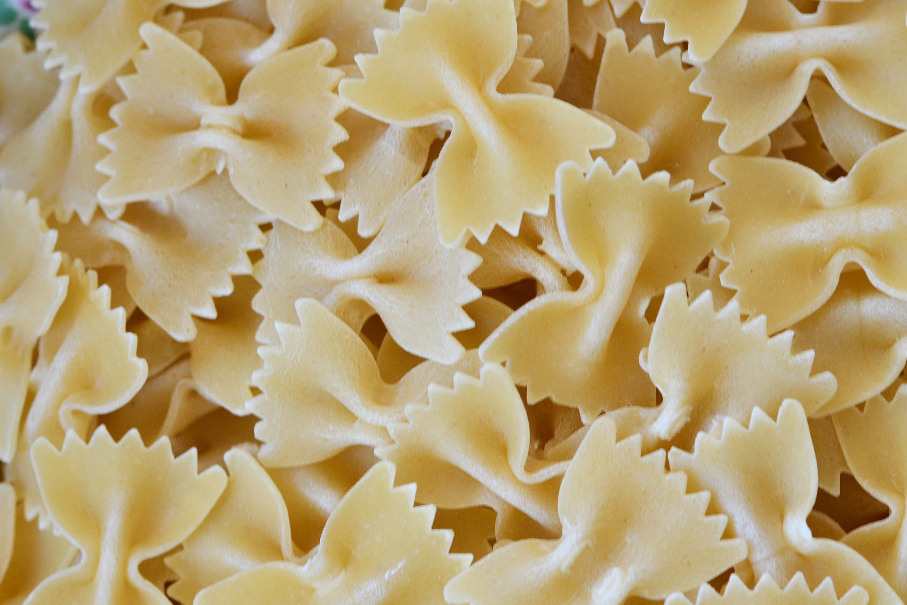

Creamy Tomato & Garlic Pasta:
This amazing, super creamy and flavour-filled pasta makes an amazing dinner for anyone who loves pasta. Pasta was invented in Italy in the 4th Century, B.C. Which is around 2400 Years ago.
Recipe:
Here is everything you will need to make this delicious, creamy tomato & garlic pasta:
- Serves: 4
- Cook Time: 15 Minutes (Roughly)
Ingredients:
- 250g Bow-Tie Pasta
- 1 ¼ Cup Tomato Paste
- 1 ½ Cup Olive Oil
- 3 Tsp Minced Garlic
- 1 ½ Cup Heavy Cream
- 3 Tsp Basil (Fresh or Dried)
- 1 Tsp All-Purpose Seasoning
- 1 Cup Parmesan
- ½ Cup Pasta Water
- 3 Tbsp Salt
Method:
- Fill a pot with water, add in 2 Tbsp salt and let the water come to a boil.
- Once the water comes to a boil, add in the pasta and let the pasta cook while you prepare the sauce.
- In a medium sized pan, add in the Oil, Tomato Paste, Garlic, Basil and Seasoning. Mix it all together until combined.
- Add in the cream and pasta water into the sauce, combine and add in the parmesan cheese.
- Once the Parmesan Cheese is melted into the sauce, let it simmer until your pasta is ready.
- Once the pasta is cooked (around 11 minutes), strain out all the water, strain, don’t dry.
- Pour the pasta into the sauce you just made, mix It all together so all the pasta is covered with the sauce.
- Dish up your pasta into 4 parts, best served with garlic bread or the Cheesy Garlic stuffed Pita Breads in the entree’s section.

Helpful Tips:
- Salt your water like the ocean. When cooking the pasta, salting the water is the only time you can properly season your pasta. Make sure the water is nice and salty to give the pasta more flavour.
- Don’t dry your pasta. If your dry your pasta, the starch will begin to harden as the pasta cools down, which is what causes the pasta to stick to itself.
- Add pasta water to your pasta sauce. Adding some pasta water to the sauce will not only add flavour and richness to it, but it will also help the sauce stick to the pasta. As the pasta water contains starch, binding together all the ingredients.